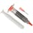

Things used in this project
Hardware components |
|
| ARM Cortex-M0 CY8C4245-AXI 483 | |
| Espressif ESP8266 ESP-12E | |

|
PCBWay Custom PCB |
| PCBWay Stencil | |
| PCBWay Flex PCB | |
| 5V Relay PCB Mount | |
| IR receiver (generic) | |
| Android device | |
| Amazon Alexa Echo Dot | |
| JustBoom IR Remote | |
Software apps and online services |
|

|
Arduino IDE |

|
Cypress PSoC Creator |

|
Microsoft VS Code |
| Amazon Web Services AWS Lambda | |
| MQTT | |
| Amazon Alexa Alexa Voice Service | |
| Actions on Google | |
Hand tools and fabrication machines |
|
| Tweezers, SMD Soldering/Desoldering | |

|
Solder Wire, Lead Free |
|  | Solder Paste, Rework |

|
Solder Flux, Soldering |
| PCB Holder, Soldering Iron | |
Story
The proposed smart home automation system is engineered to address the accessibility challenges faced by individuals with mobility impairments. By integrating advanced control technologies, the system provides a comprehensive solution for managing home appliances with minimal physical interaction.
System Components and Features:
1. Smart Switches:
- Technology: Replace traditional mechanical switches with smart switches that support remote control, voice commands, and app-based operation.
- Functionality: Enable users to control lighting, heating, cooling, and other appliances without physical effort.
2. Voice Control:
- Technology: Utilizes advanced voice recognition software capable of processing natural language commands and supporting multiple languages and accents.
- Functionality: Allows users to operate appliances and execute commands through verbal instructions, reducing the need for manual control.
3. Smartphone App:
- Technology: A dedicated mobile application compatible with both iOS and Android platforms, featuring a user-friendly interface and real-time connectivity.
- Functionality: Provides remote access to appliance controls, monitoring, and scheduling. The app includes customizable settings for ease of use.
4. Remote Control:
- Technology: A compact, ergonomically designed remote control with tactile buttons and programmable functions.
- Functionality: Facilitates easy operation of home appliances from a distance, catering to users who prefer physical controls over digital ones.
5. Scheduling and Automation:
- Technology: Integrated scheduling algorithms and automation protocols for time-based appliance management.
- Functionality: Allows users to set predefined schedules for appliance operation, such as turning lights on at specific times or adjusting the thermostat according to daily routines.
Technical Implementation:
- Integration: The system employs IoT (Internet of Things) protocols to connect and synchronize smart devices across the home network. It supports standard communication protocols.
- Security: Implements encryption and secure authentication mechanisms to protect user data and prevent unauthorized access to the system.
Basic components:
- 5v Relay: This switch controls the circuit electromechanically, allowing electrical appliances to be turned on and off with a low power signal.
- Diode: This is used to prevent PSOC.
- Optocoupler IC (moc3063): A current is applied to the Optocoupler, which emits a light proportional to the current. The light then switches on the photosensitive device, which conducts a current like an ordinary transistor.
- Triac (BT136-600v-4a-triac): Triacs are electronic components that can switch high voltages and high levels of current over both parts of an AC waveform. They are ideal for a variety of power switching applications.
- Metallized Polyester Fan Regulator Capacitors: Capacitors are used to control fan speed.
Bill of material : https://drive.google.com/file/d/17ZKFkcDzk-7p0YHh9S7vomMZsvJbrvgr/view?usp=share_link
Connections:
1. Controlling Electronics appliances :
2. Controlling Fan Speed
Schematic Diagram:
To demonstrate the functionality of our system, we have started with 4 light controls and 1 fan control. Please refer to the schematic diagram of the power module below for a visual representation of our setup.

Please find the schematic diagram of our Touch Module below. This diagram outlines the functionality and components of our system, which allows for seamless control of home electronics appliances through touch control, IR remote, and voice assistants such as Alexa and Google.
Schematic diagram of Touch Module
PCB Viewer:
Please find attached the Power Module View for our system. This module is a crucial component of our technology, allowing for efficient and reliable power management for the various home electronics appliances being controlled.
Gerber File: https://drive.google.com/file/d/1jbXJZqadmYrhs8SUUFjje20PhvFAiVj-/view?usp=share_link
Please find attached the Touch Module View for our system. This module serves as the interface between the user and the home electronics appliances being controlled. With touch control, IR remote, and voice assistant capabilities, our Touch Module offers a variety of ways to seamlessly control your smart home devices.
Gerber File: https://drive.google.com/file/d/1ap_wFNBFkqszh2POsxibOfh2cUS4051q/view?usp=share_link
Our module code is designed to handle all user operations to control home electronics appliances using our smart home automation system. The system offers four modes of working:
- Touch: The Cypress capacitive touch technology senses user touch input and reacts based on the last state of the relay value.
- Voice Command: Alexa publishes MQTT messages, which our ESP module subscribes to receive. I2C communication is used between the Cypress chip and the ESP8266 to enable voice command operation.
- IR Remote: Our ESP8266 decodes user input button commands and sends them to the Cypress chip using I2C communication. The Cypress chip reacts based on the input command.
- Smartphone: The user's smartphone can publish MQTT messages, which our ESP module subscribes to receive. I2C communication is used between the Cypress chip and the ESP8266. Based on the received command, the Cypress chip reacts and handles the relay.
Our module code allows for seamless integration of these four modes, offering users flexibility and convenience in controlling their home electronics appliances.
Flow Chart of Working System:

ARM Cortex-M0 Cypress Code:
1. To import C libraries in your code, you need to include their header files using the
#include
preprocessor directive. This allows you to use functions and data types from the library in your program.
#include "project.h"
#include "stdlib.h"
#include "cyapicallbacks.h"2. The code snippet you provided consists of four C function prototypes. These are:
void updateLoad(void);
void loadWrite(uint8,uint8);
void HandleError(void);
void i2cReceive(void);-
void updateLoad(void): A function that updates the load status of a device. -
void loadWrite(uint8, uint8): A function that writes a value to a specific load. -
void HandleError(void): A function that handles errors that may occur during program execution. -
void i2cReceive(void): A function that receives data via the I2C communication protocol.
These function prototypes define the function name, return type, and parameters (if any) that the function accepts. They are often used as a way to declare functions before they are implemented or used in a program, helping to ensure that the function is properly defined and its usage is correct.
3. The code snippet you provided defines two preprocessor directives using the
#define
keyword.
#define LightloadNumber 4
#define FanLoadNumber 1-
#define LightloadNumber 4defines a preprocessor macro with the nameLightloadNumberand a value of 4. This macro can be used in the code to represent the number of light loads that can be controlled by the program. -
#define FanLoadNumber 1defines a preprocessor macro with the nameFanLoadNumberand a value of 1. This macro can be used in the code to represent the number of fan loads that can be controlled by the program.
These preprocessor directives help to make the code more readable and maintainable by defining values that are used in multiple places throughout the program in one central location. Anytime the program needs to refer to the number of light or fan loads, it can use these macros instead of hardcoding the values, which makes the code more flexible and easier to modify in the future.
4. These lines are declaring and initializing various arrays and variables that will be used in the program for controlling the smart home automation system.
uint8 state_switch[LightloadNumber]; //status of touch switch
uint8 pre_switch[LightloadNumber]; //previous status of touch switch
uint8 state_load[LightloadNumber]; //status of load
uint8 state[LightloadNumber + FanLoadNumber + 1]; //state for communication
uint8 pre_state[LightloadNumber + FanLoadNumber + 1]; //state for communication
uint8 state_Fswitch[FanLoadNumber]; //status of fan switch
uint8 pre_Fswitch[FanLoadNumber]; //previous status of fan switch
uint8 fan_state[2];
uint8 state_Fan[FanLoadNumber]; //status of fan regulator
uint8 Switch[] = {0,1,2,3}; // touch swich for light load(cap sense button 0,1,2,3)
uint8 Load[] = {0,1,2,3}; //load connection for switch (L0,L1,L2,L3)(relay)
uint8 F_UP_DWN[2] = {5,4}; //fan up and down touch switch(cap sense button 5,6)
uint8 Fan[4] = {7,6,5,4}; //fan output connection(L4,L5,L6,L7)
uint8 Fan_led[5] = {12,11,10,9,8}; // fan speed indicator led(L8,L9,L10,L11,L12)
uint8 white_led_load[] = {13,14,15,16}; //white led for each load(L13,L14,L15,L16)
uint8 Fan_UDW[2] = {18,17}; //fan up down white led
uint8 Fan_UDB[2] = {22,21}; //fan up down blue led
// smd button down
/*
uint8 F_switch[] = {6}; //fan touch switch (cap sense button 4)
uint8 Fan_BW[2] = {20,19}; //fan blue and white led
uint8 Scenebut = {7}; //touch switch for smd pad(cap sense button 7)
uint8 scene_BW[2] = {23,24}; //smd switch up down blue led
*/
// smd button up
uint8 F_switch[] = {7}; //fan touch switch (cap sense button 4)
uint8 Fan_BW[2] = {24,23}; //fan blue and white led
uint8 Scenebut = {6}; //touch switch for smd pad(cap sense button 7)
uint8 scene_BW[2] = {19,20}; //smd switch up down blue led
uint8 ScenebutStatus = 0;
uint8 pre_ScenebutStatus = 0;
uint8 whiteLed = 1; //status of activation of white led of all loads
//i2c
uint8 i2cReadBuffer[(LightloadNumber + FanLoadNumber + 1)];
uint8 i2cWriteBuffer[(LightloadNumber + FanLoadNumber + 1)];
uint8 I2CFlag = 0u;
uint8 sceneled = 0;
uint8 speed = 0;
int onOffFlag = 0;
uint8 flag = 0;-
The arrays
state_switch,pre_switch,state_load, andstate_Fswitchare used to keep track of the current and previous status of the touch switches and fan switch. -
The arrays
stateandpre_stateare used for communication between the modules. -
The arrays
Switch,Load,F_UP_DWN,Fan,Fan_led,white_led_load,Fan_UDW, andFan_UDBare used to define the connections for the touch switches, loads, fan, fan speed indicator led, white led for each load, fan up down white led, and fan up down blue led respectively. -
The variable
ScenebutStatuskeeps track of the status of the touch switch for the smd pad. -
The arrays
i2cReadBufferandi2cWriteBufferare used for communication over I2C. -
The variables
sceneled,speed,onOffFlag, andflagare used for controlling the system.
5. A callback function:
void I2C_I2C_ISR_ExitCallback()
{
I2CFlag = 1;
}A callback function that is executed when the I2C (Inter-Integrated Circuit) module finishes sending or receiving data. Specifically, it is called when the I2C interrupt is triggered and signals that the I2C communication has completed.
In this particular code, the function sets a flag variable called
I2CFlag
to 1, indicating that the I2C communication has finished. This flag can be used by other parts of the code to determine when to take further action based on the results of the I2C communication.
6. The code that controls loads (lights and fans) using CapSense touch sensors and an I2C interface.
int main(void)
{
memset(state_switch,0,sizeof(state_switch));
memset(pre_switch,0,sizeof(pre_switch));
memset(state,0,sizeof(state));
memset(state_load,0,sizeof(state_load));
memset(pre_state,0,sizeof(pre_state));
memset(state_Fswitch,0,sizeof(state_Fswitch));
memset(pre_Fswitch,0,sizeof(pre_Fswitch));
memset(fan_state,0,sizeof(fan_state));
memset(i2cReadBuffer,0,sizeof(i2cReadBuffer));
L13_Write(whiteLed);
L14_Write(whiteLed);
L15_Write(whiteLed);
L16_Write(whiteLed);
L17_Write(whiteLed);
L18_Write(whiteLed);
L19_Write(whiteLed);
L23_Write(whiteLed);
I2C_I2CSlaveInitReadBuf(i2cReadBuffer, (LightloadNumber + FanLoadNumber + 1));
I2C_I2CSlaveInitWriteBuf(i2cWriteBuffer, (LightloadNumber + FanLoadNumber + 1));
I2C_I2C_ISR_ExitCallback();
CyGlobalIntEnable;
CySysWdtWriteMode(CY_SYS_WDT_COUNTER1, CY_SYS_WDT_MODE_RESET);
CySysWdtWriteMatch(CY_SYS_WDT_COUNTER1, 0xFA00);
CySysWdtWriteClearOnMatch(CY_SYS_WDT_COUNTER1, 1u);
CySysWdtEnable(CY_SYS_WDT_COUNTER1_MASK);
CapSense_1_Start();
CapSense_1_InitializeAllBaselines();
I2C_Start();
for(;;)
{
if(0u == CapSense_1_IsBusy()){
/* Update all baselines */
CapSense_1_ProcessAllWidgets();
/* Start scanning all enabled sensors */
CapSense_1_ScanAllWidgets();
}
ScenebutStatus = CapSense_1_IsWidgetActive(Scenebut);
if(ScenebutStatus != pre_ScenebutStatus){
if(ScenebutStatus != 0 && onOffFlag == 0){
onOffFlag = 1;
for(int i = 0; i < LightloadNumber+FanLoadNumber; i++){
if(i<LightloadNumber)
loadWrite(Load[i],0);
state[i] = 0;
}
loadWrite(Fan_BW[0],0);
if(whiteLed == 1){
for(int i = 0; i < LightloadNumber; i++){
loadWrite(white_led_load[i],1);
}
loadWrite(Fan_BW[1],1);
}
}
else if(ScenebutStatus != 0 && onOffFlag == 1){
onOffFlag = 0;
for(int i = 0; i < LightloadNumber+FanLoadNumber; i++){
if(i<LightloadNumber)
loadWrite(Load[i],1);
state[i] = 1;
}
loadWrite(Fan_BW[0],1);
if(whiteLed == 1){
for(int i = 0; i < LightloadNumber; i++){
loadWrite(white_led_load[i],0);
}
loadWrite(Fan_BW[1],0);
}
}
pre_ScenebutStatus = ScenebutStatus;
}
if(state[0] != 1 && state[1] != 1 && state[2] != 1 && state[3] != 1 && state[4] != 1){
onOffFlag = 1;
}
else {
onOffFlag = 0;
}
if(state[0] == 1 && state[1] == 1 && state[2] == 1 && state[3] == 1 && state[4] == 1){
if(whiteLed == 1)
loadWrite(scene_BW[0],0);
loadWrite(scene_BW[1],1);
}
else {
if(whiteLed == 1)
loadWrite(scene_BW[0],1);
loadWrite(scene_BW[1],0);
}
for(uint8 i = 0 ; i < LightloadNumber ; i++){
state_switch[i] = CapSense_1_IsWidgetActive(Switch[i]);
if(state_switch[i] != pre_switch[i]){
if(state_switch[i] != 0){
if(state[i] != 0)
state_load[i] = 0;
else
state_load[i] = 1;
loadWrite(Load[i],state_load[i]);
state[i] = state_load[i] ? 1 : 0;
if(whiteLed == 1)
loadWrite(white_led_load[i],!(state_load[i]));
}
pre_switch[i] = state_switch[i];
}
}
state_Fswitch[0] = CapSense_1_IsWidgetActive(F_switch[0]);
if(state_Fswitch[0] != pre_Fswitch[0]){
if(state_Fswitch[0] != 0){
if(state[4] != 0)
state_Fan[0] = 0;
else
state_Fan[0] = 1;
loadWrite(Fan_BW[0],state_Fan[0]);
state[4] = state_Fan[0] ? 1 : 0;
if(whiteLed == 1)
loadWrite(Fan_BW[1],!(state_Fan[0]));
for (uint8 i = 0; i < 4; i++)
loadWrite(Fan[i], 0);
if(state[4] == 1){
if(speed == 1){
loadWrite(Fan[1], 1);
}
else if(speed == 2){
loadWrite(Fan[2], 1);
}
else if(speed == 3){
loadWrite(Fan[0], 1);
loadWrite(Fan[2], 1);
}
else if(speed == 4){
loadWrite(Fan[1], 1);
loadWrite(Fan[2], 1);
}
else if (speed == 5){
loadWrite(Fan[3], 1);
}
}
else if(state[4] == 0){
for (uint8 i = 0; i < 4; i++)
loadWrite(Fan[i], 0);
}
}
pre_Fswitch[0] = state_Fswitch[0];
}
if(CapSense_1_IsWidgetActive(F_UP_DWN[0]) != fan_state[0]){
if(CapSense_1_IsWidgetActive(F_UP_DWN[0]) != 0){
if(speed != 5)
speed++; //fan state[3] increase by 1
else
speed = 0;
fan_state[0] = !(fan_state[0]);
loadWrite(Fan_UDW[0],0); // fan up white led off
loadWrite(Fan_UDB[0],1); //fan up blue led on
}
else{
loadWrite(Fan_UDB[0],0); //fan up blue led off
if(whiteLed == 1)
loadWrite(Fan_UDW[0],1); //fan up white led off
}
fan_state[0] = (CapSense_1_IsWidgetActive(F_UP_DWN[0]));
}
if(CapSense_1_IsWidgetActive(F_UP_DWN[1]) != fan_state[1]){ //check if fan down touch pad is pressed
if(CapSense_1_IsWidgetActive(F_UP_DWN[1]) != 0){
if(speed != 0)
speed--; //fan state[3] decrease by 1
else
speed = 5;
fan_state[1] = !(fan_state[1]);
loadWrite(Fan_UDW[1],0);
loadWrite(Fan_UDB[1],1);
}
else{
loadWrite(Fan_UDB[1],0);
if(whiteLed == 1)
loadWrite(Fan_UDW[1],1);
}
fan_state[1] = (CapSense_1_IsWidgetActive(F_UP_DWN[1]));
}
if(speed == 0){
state[5] = 0;
for(int i = 0;i<5;i++){
loadWrite(Fan_led[i],0);
}
}
else if(speed == 1){
state[5] = 1;
loadWrite(Fan_led[0],1);
for(int i = 1;i<5;i++){
loadWrite(Fan_led[i],0);
}
}
else if(speed == 2){
state[5] = 2;
for(int i = 0;i<2;i++){
loadWrite(Fan_led[i],1);
}
for(int i = 2;i<5;i++){
loadWrite(Fan_led[i],0);
}
}
else if(speed == 3){
state[5] = 3;
for(int i = 0;i<3;i++){
loadWrite(Fan_led[i],1);
}
for(int i = 3;i<5;i++){
loadWrite(Fan_led[i],0);
}
}
else if(speed == 4){
state[5] = 4;
for(int i = 0;i<4;i++){
loadWrite(Fan_led[i],1);
}
loadWrite(Fan_led[4],0);
}
else if(speed == 5){
state[5] = 5;
for(int i = 0;i<5;i++){
loadWrite(Fan_led[i],1);
}
}
if(state[5] != pre_state[5]){
for (uint8 i = 0; i < 4; i++)
loadWrite(Fan[i], 0);
if(state[4] == 1){
if(speed == 1){
loadWrite(Fan[1], 1);
}
else if(speed == 2){
loadWrite(Fan[2], 1);
}
else if(speed == 3){
loadWrite(Fan[0], 1);
loadWrite(Fan[2], 1);
}
else if(speed == 4){
loadWrite(Fan[1], 1);
loadWrite(Fan[2], 1);
}
else if (speed == 5){
loadWrite(Fan[3], 1);
}
}
//pre_state[5] = state[5];
}
if(I2CFlag != 0)
{
I2CFlag = 0;
if (0u != (I2C_I2C_SSTAT_WR_CMPLT & I2C_I2CSlaveStatus()))
{
i2cReceive();
I2C_I2CSlaveClearWriteBuf();
(void) I2C_I2CSlaveClearWriteStatus();
}
if(0u != (I2C_I2C_SSTAT_RD_CMPLT & I2C_I2CSlaveStatus()))
{
I2C_I2CSlaveClearReadBuf();
(void) I2C_I2CSlaveClearReadStatus();
}
}
for(uint8 i = 0 ; i < LightloadNumber + FanLoadNumber + 1; i++){
if(state[i] != pre_state[i]){
if((I2C_I2C_SSTAT_RD_BUSY & I2C_I2CSlaveStatus()) == 0){
pre_state[i] = state[i];
i2cReadBuffer[i] = state[i];
}
}
}
CySysWatchdogFeed(CY_SYS_WDT_COUNTER1);
}
}The program initializes the various memory locations to zero and sets the state of the loads to zero. It then initializes and enables the Watchdog Timer, CapSense module, and I2C interface.
In the main loop, the program scans all enabled sensors and checks the status of the Scene button. If the Scene button is pressed, the program turns on/off all the loads depending on their previous state. If all loads are on, the program turns on the "All off" button and turns off the "All on" button, and vice versa.
The program then checks the status of the touch sensors for each load and sets the state of the loads accordingly. It also checks the status of the Fan switch and sets the state of the Fan load accordingly. If the white LED is on, the program sets the state of the white LED load accordingly.
The program also sets the various memory locations to their respective values in order to ensure proper functioning. The program then repeats this loop continuously.
7. This is a function that receives data over I2C communication and updates the states of various loads connected to the microcontroller accordingly.
void i2cReceive(void){
for (uint8 i = 0; i < LightloadNumber; i++) {
state[i] = i2cWriteBuffer[i];
if (state[i] == 0) {
loadWrite(Load[i],0);
if(whiteLed == 1)
loadWrite(white_led_load[i],1);
}
else if (state[i] == 1) {
loadWrite(Load[i], 1);
loadWrite(white_led_load[i],0);
}
}
state[4] = i2cWriteBuffer[4];
if(state[4] != 0)
state_Fan[0] = 0;
else
state_Fan[0] = 1;
loadWrite(Fan_BW[0],!state_Fan[0]);
loadWrite(Fan_BW[1],(state_Fan[0]));
state[5] = i2cWriteBuffer[5];
speed = i2cWriteBuffer[5];
for (uint8 i = 0; i < 4; i++)
loadWrite(Fan[i], 0);
if(state[4] == 1){
if(speed == 1){
loadWrite(Fan[1], 1);
}
else if(speed == 2){
loadWrite(Fan[2], 1);
}
else if(speed == 3){
loadWrite(Fan[0], 1);
loadWrite(Fan[2], 1);
}
else if(speed == 4){
loadWrite(Fan[1], 1);
loadWrite(Fan[2], 1);
}
else if (speed == 5){
loadWrite(Fan[3], 1);
}
}
}
The function starts by iterating through a for loop that goes up to a value defined by the macro
LightloadNumber
. For each iteration, the state of a particular load is updated with the corresponding value received over I2C communication. If the state is zero, the corresponding load is turned off, and if the
whiteLed
variable is set to one, the white LED load is turned on. If the state is one, the corresponding load is turned on, and the white LED load is turned off.
After the loop, the state of the Fan load is updated based on the value received over I2C communication at index 4 of the
i2cWriteBuffer
array. If this value is zero, then the Fan load is turned on, and if it is one, the Fan load is turned off. The state of the Fan is then used to set the state of two other loads (
Fan_BW[0]
and
Fan_BW[1]
) using bitwise NOT and bitwise AND operations.
Finally, the speed of the Fan load is updated based on the value received over I2C communication at index 5 of the
i2cWriteBuffer
array. Depending on the value of the speed, different combinations of loads (
Fan[0]
to
Fan[3]
) are turned on or off.
8. Function loadWrite
void loadWrite(uint8 loadpin,uint8 state){
switch(loadpin){
case 0:
L0_Write(state);
break;
case 1:
L1_Write(state);
break;
case 2:
L2_Write(state);
break;
case 3:
L3_Write(state);
break;
case 4:
L4_Write(state);
break;
case 5:
L5_Write(state);
break;
case 6:
L6_Write(state);
break;
case 7:
L7_Write(state);
break;
case 8:
L8_Write(state);
break;
case 9:
L9_Write(state);
break;
case 10:
L10_Write(state);
break;
case 11:
L11_Write(state);
break;
case 12:
L12_Write(state);
break;
case 13:
L13_Write(state);
break;
case 14:
L14_Write(state);
break;
case 15:
L15_Write(state);
break;
case 16:
L16_Write(state);
break;
case 17:
L17_Write(state);
break;
case 18:
L18_Write(state);
break;
case 19:
L19_Write(state);
break;
case 20:
L20_Write(state);
break;
case 21:
L21_Write(state);
break;
case 22:
L22_Write(state);
break;
case 23:
L23_Write(state);
break;
case 24:
L24_Write(state);
break;
}
}
This function
loadWrite
is used to write a digital state (high or low) to a specific load pin. The function takes two arguments: the first argument
loadpin
is an integer that specifies the load pin number (ranging from 0 to 24), and the second argument
state
is an integer that specifies the state of the load pin (0 or 1, low or high).
The function uses a switch-case statement to determine which load pin to write to based on the value of
loadpin
. Each case corresponds to a specific load pin number and calls the appropriate function (e.g.
L0_Write
,
L1_Write
, etc.) to write the specified state to that load pin.
9. Function HandleError
void HandleError(void)
{
/* Disable all interrupts. */
__disable_irq();
/* Infinite loop. */
while(1u) {}
}
The
HandleError()
function is used to handle errors in the firmware. It disables all interrupts and enters an infinite loop, effectively stopping the execution of the program. This function is typically called when a serious error is detected that cannot be recovered from, such as a hardware fault or a critical software error. By entering an infinite loop, the program is effectively halted, preventing any further damage or malfunction from occurring. This function is commonly used in safety-critical systems where the failure of the system could result in harm to people or damage to property.
Arduino code:
This snippet is the initial part of an Arduino sketch designed for an ESP8266 microcontroller, which focuses on setting up the environment to work with an infrared (IR) remote receiver.
#include <Wire.h>
#ifndef UNIT_TEST
#include <Arduino.h>
#endif
#include <IRremoteESP8266.h>
#include <IRrecv.h>
#include <IRutils.h>
#define CAPTURE_BUFFER_SIZE 1024
#define TIMEOUT 15U
Libraries:
-
Wire.h: For I2C communication. -
Arduino.h: Core Arduino functions (included only if not unit testing). -
IRremoteESP8266.h, IRrecv.h, IRutils.h: Libraries to receive and decode IR signals.
Macros:
-
CAPTURE_BUFFER_SIZE: Sets the IR capture buffer size to 1024 bytes. -
TIMEOUT: Defines a 15-microsecond timeout for IR signal capture.
uint16_t RECV_PIN = 14;
IRrecv irrecv(RECV_PIN, CAPTURE_BUFFER_SIZE, TIMEOUT, true);
decode_results results; // Somewhere to store the results
int sCount = 4;
int data[4] = {0, 0, 0, 0};
int pre_data[2] = {1, 1};
byte i2cadd = 10;
String t = "";
unsigned long delay1 = 0;This code sets up variables for an ESP8266:
- RECV_PIN = 14: Pin for the IR receiver.
- IRrecv irrecv: Initializes IR receiver with buffer size and timeout.
- decode_results results: Stores decoded IR signals.
- data[4]: Stores sensor/switch data.
- pre_data[2]: Stores previous states.
- i2cadd = 10: I2C address.
- t: Empty string for temporary storage.
- delay1: For timing operations.
This setup is for receiving IR signals and handling sensor data.
#include <PubSubClient.h>
#include<ESP8266WiFi.h>
char message_buff[500];
const char *ssid = "KIDD";
const char *password = "kidd@7890";
const char *mqtt_server = "tailor.cloudmqtt.com";
int mqtt_port = 13582;
//const char *mqtt_server = "broker.hivemq.com";
//int mqtt_port = 1883;
const char *device_id = "esp8266987654321";
const char *mqtt_username = "abc";
const char *mqtt_password = "PAC8F72zynig";
Libraries:
-
PubSubClient.h: For MQTT communication. -
ESP8266WiFi.h: For Wi-Fi connectivity.
Variables:
-
message_buff[500]: Buffer for MQTT messages, up to 500 characters. -
ssid = "KIDD"andpassword = "kidd@7890": Wi-Fi credentials. -
mqtt_server = "tailor.cloudmqtt.com"andmqtt_port = 13582: MQTT server address and port. -
device_id = "esp8266987654321": Unique ID for the device in MQTT. -
mqtt_username = "dgfdf"andmqtt_password = "PAC8F72zynig": MQTT authentication credentials.
#include<espnow.h>
#define MY_ROLE ESP_NOW_ROLE_COMBO // set the role of this device: CONTROLLER, SLAVE, COMBO
#define RECEIVER_ROLE ESP_NOW_ROLE_COMBO // set the role of the receiver
#define WIFI_CHANNEL 1
#define MY_NAME "SENSOR NODE" //DC:4F:22:66:C8:B4 my mac // WEMOS D1 : 5C:CF:7F:4C:56:64
uint8_t receiverAddress[] = {0x60, 0x01, 0x94, 0x4E, 0xF1, 0x7F}; // PC MAC
//uint8_t receiverAddress[] = {0xDC, 0x4F, 0x22, 0x66, 0xCE, 0x32}; // PC MAC
struct __attribute__((packed)) dataPacket {
int switch1;
int switch2;
};
WiFiClient espClient;
PubSubClient client(espClient);
ESP-NOW Configuration:
-
MY_ROLE = ESP_NOW_ROLE_COMBO: Sets the device's role to both controller and receiver. -
RECEIVER_ROLE = ESP_NOW_ROLE_COMBO: The role for the receiver device is also set to combo. -
WIFI_CHANNEL = 1: Specifies Wi-Fi channel 1 for communication. -
MY_NAME = "SENSOR NODE": Assigns the name "SENSOR NODE" to this device. -
receiverAddress[]: The MAC address of the receiver device.
Data Structure:
-
struct dataPacket: A packed structure to hold two integer values, likely representing switch states.
MQTT Setup:
-
WiFiClient espClient: Initializes a Wi-Fi client for network communication. -
PubSubClient client(espClient): Sets up an MQTT client using the Wi-Fi client.
void setup() {
Serial.begin(115200); // initialize serial port
Serial.println();
Serial.println();
Serial.println();
pinMode(D4, OUTPUT);
irrecv.enableIRIn();
Serial.print("Pin : ");
Serial.println(RECV_PIN);
Wire.begin(D6, D7);
// WiFi.mode(WIFI_STA);
// WiFi.disconnect(); // we do not want to connect to a WiFi network
WiFi.begin(ssid, password);
while (WiFi.status() != WL_CONNECTED) {
delay(100);
Serial.print(".");
}
Serial.println();
Serial.print("Station IP Address: ");
Serial.println(WiFi.localIP());
Serial.print("This is my address: ");
Serial.println(WiFi.macAddress());
Serial.print(MY_NAME);
Serial.println("...initializing...");
if (esp_now_init() != 0) {
Serial.println("ESP-NOW initialization failed");
return;
}
esp_now_set_self_role(MY_ROLE);
esp_now_register_send_cb(transmissionComplete); // this function will get called once all data is sent
esp_now_register_recv_cb(dataReceived); // this function will get called whenever we receive data
esp_now_add_peer(receiverAddress, RECEIVER_ROLE, WIFI_CHANNEL, NULL, 0);
Serial.println("Initialized.");
client.setServer(mqtt_server, mqtt_port);
client.setCallback(callback);
}Serial Communication Initialization:
-
Serial.begin(115200);: Initializes serial communication at a baud rate of 115200. -
Serial.println();: Prints empty lines for spacing.
Pin and IR Setup:
-
pinMode(D4, OUTPUT);: Sets pin D4 as an output. -
irrecv.enableIRIn();: Starts the IR receiver. -
Serial.print("Pin : ");: Prints the pin used for IR reception.
I2C Setup:
-
Wire.begin(D6, D7);: Initializes I2C communication on pins D6 (SDA) and D7 (SCL).
Wi-Fi Connection:
-
WiFi.begin(ssid, password);: Connects to the specified Wi-Fi network. -
while (WiFi.status() != WL_CONNECTED): Waits until the connection is established, printing dots to indicate progress. -
Serial.println(WiFi.localIP());: Prints the IP address assigned to the ESP8266.
ESP-NOW Initialization:
-
esp_now_init(): Initializes ESP-NOW communication. -
esp_now_set_self_role(MY_ROLE);: Sets the device's role (controller/receiver). -
esp_now_register_send_cb(transmissionComplete);: Registers a callback for when data transmission is complete. -
esp_now_register_recv_cb(dataReceived);: Registers a callback for when data is received. -
esp_now_add_peer(receiverAddress, RECEIVER_ROLE, WIFI_CHANNEL, NULL, 0);: Adds the receiver's MAC address to the peer list for communication.
MQTT Client Setup:
-
client.setServer(mqtt_server, mqtt_port);: Sets up the MQTT server and port. -
client.setCallback(callback);: Registers a callback function to handle incoming MQTT messages.
void loop() {
if (!client.connected())
{
reconnect();
}
client.loop();
if (irrecv.decode(&results)) {
serialPrintUint64(results.value, HEX);
Serial.println("");
if (results.value == 0x00000B69 || results.value == 0x00000369) // light 1
{
Serial.println("light 1");
data[0] = !data[0];
dataPacket packet;
packet.switch1 = data[0];
packet.switch2 = data[1];
esp_now_send(receiverAddress, (uint8_t *) &packet, sizeof(packet));
for (int i = 0; i < sCount; i++)
Serial.print(data[i]);
Serial.println();
i2cWrite(data);
}
else if (results.value == 0x00000B72 || results.value == 0x00000372) // fan on off
{
Serial.println("light 2");
data[1] = !data[1];
dataPacket packet;
packet.switch1 = data[0];
packet.switch2 = data[1];
esp_now_send(receiverAddress, (uint8_t *) &packet, sizeof(packet));
for (int i = 0; i < sCount; i++)
Serial.print(data[i]);
Serial.println();
i2cWrite(data);
}
else if (results.value == 0x00000B71 || results.value == 0x00000371) // fan on off
{
Serial.println("fan switch");
data[2] = !data[2];
for (int i = 0; i < sCount; i++)
Serial.print(data[i]);
Serial.println();
i2cWrite(data);
}
else if (results.value == 0x00000B73 || results.value == 0x00000373) //fan up
{
Serial.println("fan up");
if (data[3] != 5)
data[3]++;
else
data[3] = 0;
for (int i = 0; i < sCount; i++)
Serial.print(data[i]);
Serial.println();
i2cWrite(data);
}
else if (results.value == 0x00000B74 || results.value == 0x00000374) // fan down
{
Serial.println("fan down");
if (data[3] != 0)
data[3]--;
else
data[3] = 5;
for (int i = 0; i < sCount; i++)
Serial.print(data[i]);
Serial.println();
i2cWrite(data);
}
else if (results.value == 0x00000B7E || results.value == 0x0000037E) // All On Off
{
Serial.println("all on off");
if (data[0] == 1 && data[1] == 1 && data[2] == 1) {
data[0] = 0; data[1] = 0; data[2] = 0;
}
else if (data[0] == 0 && data[1] == 0 && data[2] == 0) {
data[0] = 1; data[1] = 1; data[2] = 1;
}
else {
data[0] = 0; data[1] = 0; data[2] = 0;
}
for (int i = 0; i < sCount; i++)
Serial.print(data[i]);
Serial.println();
i2cWrite(data);
}
irrecv.resume(); // Receive the next value
}
if (abs(millis() - delay1) > 50) {
//if (abs(millis() - delay1) > 1000) {
delay1 = millis();
// Serial.println("------------");
if (Wire.requestFrom(i2cadd, sCount, true)) {
for (int i = 0; i < sCount; i++) {
data[i] = Wire.read();
// Serial.print(data[i]);
// Serial.print(" ");
}
// Serial.println();
}
}
if (data[0] != pre_data[0]) {
dataPacket packet;
packet.switch1 = data[0];
packet.switch2 = data[1];
esp_now_send(receiverAddress, (uint8_t *) &packet, sizeof(packet));
pre_data[0] = data[0];
}
if (data[1] != pre_data[1]) {
dataPacket packet;
packet.switch1 = data[0];
packet.switch2 = data[1];
esp_now_send(receiverAddress, (uint8_t *) &packet, sizeof(packet));
pre_data[1] = data[1];
}
}
Key Actions:
MQTT Reconnection:
-
if (!client.connected()) { reconnect(); }: Reconnects to MQTT server if disconnected. -
client.loop();: Processes MQTT messages.
IR Signal Processing:
if (irrecv.decode(&results))
: Checks if an IR signal is received and decoded.
Switch Cases
: Updates
data[]
based on specific IR codes and sends data via ESP-NOW. Examples:
-
Light 1
: Toggles
data[0]. -
Fan On/Off
: Toggles
data[1]. -
Fan Switch
: Toggles
data[2]. -
Fan Up/Down
: Adjusts
data[3]between 0 and 5. - All On/Off : Toggles all switches based on their current state.
-
Switch Cases
: Updates
data[]based on specific IR codes and sends data via ESP-NOW. Examples: Light 1 : Togglesdata[0]. Fan On/Off : Togglesdata[1]. Fan Switch : Togglesdata[2]. Fan Up/Down : Adjustsdata[3]between 0 and 5. All On/Off : Toggles all switches based on their current state.
I2C Data Update:
-
if (abs(millis() - delay1) > 50): Every 50 ms, reads data from an I2C device and updatesdata[].
ESP-NOW Data Transmission:
-
if (data[0] != pre_data[0])andif (data[1] != pre_data[1]): Sends updateddatavia ESP-NOW if there's a change indata[0]ordata[1].
void i2cWrite(int data[]) {
Serial.println("i2cWrite");
Wire.beginTransmission(i2cadd);
for (int i = 0; i < sCount; i++) {
t = String(data[i]); Serial.print(t); Serial.print(" "); Wire.write(byte(t.toInt()));
}
Serial.println();
Wire.endTransmission();
}
Functionality:
Serial.println("i2cWrite");
: Prints a message to indicate the function has started.
Wire.beginTransmission(i2cadd);
: Begins communication with the I2C device at address
i2cadd
.
for (int i = 0; i < sCount; i++)
: Loops through the
data[]
array.
-
t = String(data[i]);: Converts each integer indata[]to a string. -
Serial.print(t); Serial.print(" ");: Prints each value for debugging. -
Wire.write(byte(t.toInt()));: Sends the integer value as a byte to the I2C device.
Wire.endTransmission();
: Ends the I2C communication.
void transmissionComplete(uint8_t *receiver_mac, uint8_t transmissionStatus) {
if (transmissionStatus == 0) {
Serial.println("Data sent successfully");
} else {
Serial.print("Error code: ");
Serial.println(transmissionStatus);
}
}- On success (status 0) : Prints "Data sent successfully".
- On error : Prints "Error code:" followed by the error code.
void dataReceived(uint8_t *senderMac, uint8_t *data123, uint8_t dataLength) {
char macStr[18];
dataPacket packet;
snprintf(macStr, sizeof(macStr), "%02x:%02x:%02x:%02x:%02x:%02x", senderMac[0], senderMac[1], senderMac[2], senderMac[3], senderMac[4], senderMac[5]);
Serial.println();
Serial.print("Received data from: ");
Serial.println(macStr);
memcpy(&packet, data123, sizeof(packet));
Serial.print("data[0] : ");
Serial.println(packet.switch1);
data[0] = packet.switch1;
Serial.print("data[1] : ");
Serial.println(packet.switch2);
data[1] = packet.switch2;
i2cWrite(data);
}- Formats and prints the sender's MAC address.
-
Copies received data into a
dataPacketstructure. -
Updates
data[]with the received values. -
Writes the updated
data[]to an I2C device.
void callback(char *topic, byte *payload, unsigned int length)
{
Serial.print("Message arrived [");
Serial.print(topic);
Serial.println("] ");
int i;
for (i = 0; i < length; i++)
{
message_buff[i] = payload[i];
}
message_buff[i] = '\0';
String msgString = String(message_buff);
Serial.println(msgString);
if (strcmp(topic, "esp8266/led_control") == 0)
{
int pin_number = (msgString.substring(0, 1).toInt());
int what_to_do = (msgString.substring(1, 2).toInt());
if (pin_number == 1) {
if (what_to_do == 1){data[1] = 1;i2cWrite(data);}
if (what_to_do == 0){data[1] = 0;i2cWrite(data);}
}
if (pin_number == 2) {
if (what_to_do == 1){data[0] = 1;i2cWrite(data);}
if (what_to_do == 0){data[0] = 0;i2cWrite(data);}
}
if (pin_number == 3) {
if (what_to_do == 1){data[2] = 1;i2cWrite(data);}
if (what_to_do == 0){data[2] = 0;i2cWrite(data);}
if (what_to_do == 2){data[3] = 0;i2cWrite(data);}
if (what_to_do == 3){data[3] = 1;i2cWrite(data);}
if (what_to_do == 4){data[3] = 2;i2cWrite(data);}
if (what_to_do == 5){data[3] = 3;i2cWrite(data);}
if (what_to_do == 6){data[3] = 4;i2cWrite(data);}
if (what_to_do == 7){data[3] = 5;i2cWrite(data);}
}
}
}-
Copies the payload into
message_buffand converts it to aString. -
Parses the message and updates
data[]based on the topic and message content: -
For topic
"esp8266/led_control":
pin_number
determines which pin to control.
-
what_to_dospecifies the action: -
Pin 1 and 2
: Set
data[]values to 0 or 1. -
Pin 3
: Sets
data[2]to 0 or 1 anddata[3]to a value between 0 and 5 based onwhat_to_do.
Updates the I2C device with the new data[] values.
void reconnect()
{
while (!client.connected())
{
Serial.print("Attempting MQTT connection...");
if (client.connect(device_id, mqtt_username, mqtt_password))
// if (client.connect(device_id))
{
Serial.println("connected");
client.subscribe("esp8266/led_control/2_1/dm"); // write your unique ID here
}
else
{
Serial.print("failed, rc=");
Serial.print(client.state());
Serial.println(" try again in 5 seconds");
delay(5000);
}
}
}- Attempts to reconnect to the MQTT broker if not already connected.
- Prints status messages about connection attempts and results.
-
On successful connection
, it subscribes to the topic
"esp8266/led_control/2_1/dm". - If the connection fails , it prints the error code and retries every 5 seconds
Alexa and Google Home development:
Required Account:
1. AWS account ( https://aws.amazon.com/)
2. Alexa Developer ( https://developer.amazon.com/en-US/alexa)
3. Google Cloud Developer ( https://console.cloud.google.com)
To develop an Amazon Alexa smart home skill, you can follow the steps provided in the video. Be sure to set up a rule that enables the Lambda function to read data from DynamoDB, which will give you the ability to display real-time switch statuses in both the Amazon Alexa and Google Home applications.
AWS Role :
Also change runtime setting in lambda function. Edit handler lambda_function to only lambda (if you copy paste my code).
Alexa Skill Development:
Alexa Skill Enable:
Google action :
Account linking and setup for google action :
Android Application with Firebase and MQTT:
Installed Live Module:
Benefits:
- Enhanced Accessibility: Provides multiple control methods to suit different user preferences and physical capabilities.
- Increased Independence: Empowers users to manage their home environment autonomously, improving their overall quality of life.
- Safety and Convenience: Reduces physical strain and potential hazards associated with traditional manual controls, while enabling timely and efficient appliance management.
The advanced smart home automation system represents a significant advancement in creating inclusive living environments, leveraging cutting-edge technology to support individuals with mobility impairments and enhance their daily living experience.
With the completion of this project, you now have a functional smart home system that can be controlled using voice commands through Amazon Alexa and Google Home. Enjoy the convenience and efficiency that this system brings to your home!
Custom parts and enclosures
Cover 4_1

Schematics
Power 4_1 Top

Power 4_1 Bottom

Touch 4_1 Bottom